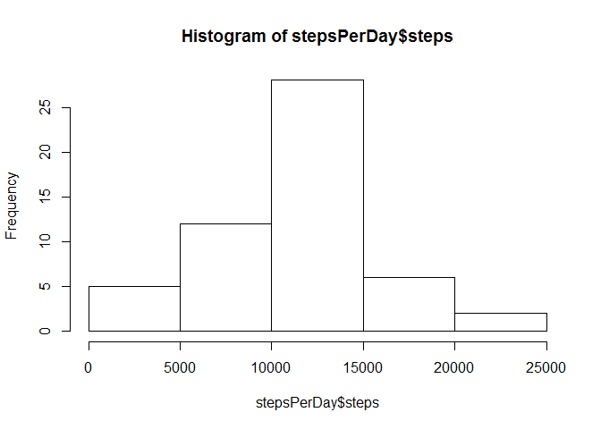
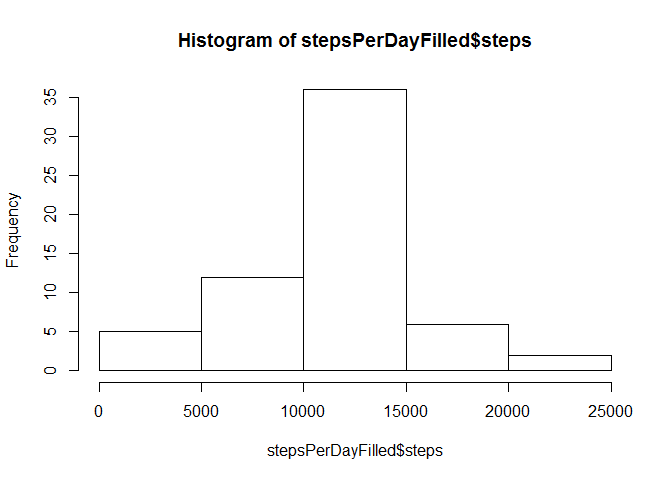

Reproducible Research: Peer Assessment 1
PhiMin
Loading and preprocessing the data
Unzip and load the data:
unzip("activity.zip")
activity <- read.csv("activity.csv")Classes of data set columns:
str(activity)## 'data.frame': 17568 obs. of 3 variables:
## $ steps : int NA NA NA NA NA NA NA NA NA NA ...
## $ date : Factor w/ 61 levels "2012-10-01","2012-10-02",..: 1 1 1 1 1 1 1 1 1 1 ...
## $ interval: int 0 5 10 15 20 25 30 35 40 45 ...date needs to be converted:
# convert date info in format 'yyyy-mm-dd'
activity$date <- as.Date(activity$date, "%Y-%m-%d")Summary of data set:
summary(activity)## steps date interval
## Min. : 0.00 Min. :2012-10-01 Min. : 0.0
## 1st Qu.: 0.00 1st Qu.:2012-10-16 1st Qu.: 588.8
## Median : 0.00 Median :2012-10-31 Median :1177.5
## Mean : 37.38 Mean :2012-10-31 Mean :1177.5
## 3rd Qu.: 12.00 3rd Qu.:2012-11-15 3rd Qu.:1766.2
## Max. :806.00 Max. :2012-11-30 Max. :2355.0
## NA's :2304What is mean total number of steps taken per day?
Calculate the total number of steps taken per day:
stepsPerDay <- aggregate(steps ~ date, activity, sum, na.rm=T)QC check:
sum(stepsPerDay$steps)## [1] 570608sum(activity[!is.na(activity$steps),]$steps)## [1] 570608Make a histogram of the total number of steps taken each day, calculate and report the mean and median of the total number of steps taken per day
hist(stepsPerDay$steps)
mean(stepsPerDay$steps)## [1] 10766.19median(stepsPerDay$steps)## [1] 10765What is the average daily activity pattern?
Make a time series plot of the 5-minute interval (x-axis) and the average number of steps taken, averaged across all days (y-axis)
avgStepsPerInterval <- aggregate(steps ~ interval, activity, mean)
plot(avgStepsPerInterval, type = "l")
Which 5-minute interval, on average across all the days in the dataset, contains the maximum number of steps?
avgStepsPerInterval[avgStepsPerInterval$steps==max(avgStepsPerInterval$steps),]## interval steps
## 104 835 206.1698Interval 835 with approx. 206 steps contians the maximum number of steps.
Imputing missing values
Calculate and report the total number of missing values in the dataset (i.e. the total number of rows with NAs):
table(is.na(activity$steps))##
## FALSE TRUE
## 15264 2304table(is.na(activity$date))##
## FALSE
## 17568table(is.na(activity$interval))##
## FALSE
## 175682304 values are NA (all for steps).
Strategy for filling the NA’s: mean for that 5-minute interval
activityFilled <- merge(x = activity, y = avgStepsPerInterval, by="interval", all.x=T)
activityFilled[is.na(activityFilled$steps.x),]$steps.x <- activityFilled[is.na(activityFilled$steps.x),]$steps.y
head(activityFilled)## interval steps.x date steps.y
## 1 0 1.716981 2012-10-01 1.716981
## 2 0 0.000000 2012-11-23 1.716981
## 3 0 0.000000 2012-10-28 1.716981
## 4 0 0.000000 2012-11-06 1.716981
## 5 0 0.000000 2012-11-24 1.716981
## 6 0 0.000000 2012-11-15 1.716981activityFilled <- activityFilled[,c(1:3)]
names(activityFilled) <- c("interval", "steps", "date")
head(activityFilled)## interval steps date
## 1 0 1.716981 2012-10-01
## 2 0 0.000000 2012-11-23
## 3 0 0.000000 2012-10-28
## 4 0 0.000000 2012-11-06
## 5 0 0.000000 2012-11-24
## 6 0 0.000000 2012-11-15Make a histogram of the total number of steps taken each day and Calculate and report the mean and median total number of steps taken per day. Do these values differ from the estimates from the first part of the assignment? What is the impact of imputing missing data on the estimates of the total daily number of steps?
stepsPerDayFilled <- aggregate(steps ~ date, activityFilled, sum)
hist(stepsPerDayFilled$steps)
mean(stepsPerDayFilled$steps)## [1] 10766.19median(stepsPerDayFilled$steps)## [1] 10766.19Data for comparison from earlier:
mean(stepsPerDay$steps)## [1] 10766.19median(stepsPerDay$steps)## [1] 10765Mean does not change, but the median does a little bit (1 step), but the histogram shows, that the data is more centered.
Are there differences in activity patterns between weekdays and weekends?
Create a new factor variable in the dataset with two levels - “weekday” and “weekend” indicating whether a given date is a weekday or weekend day.
activityFilled$wd <- "weekday"
activityFilled[weekdays(activityFilled$date, T) %in% c("Sa", "So"),]$wd <- "weekend"
table(activityFilled$wd)##
## weekday weekend
## 12960 4608Make a panel plot containing a time series plot (i.e. type = “l”) of the 5-minute interval (x-axis) and the average number of steps taken, averaged across all weekday days or weekend days (y-axis)
avgStepsPerIntervalWithWeekday <- aggregate(steps ~ interval + wd, activityFilled, mean)
library(lattice)
xyplot(steps ~ interval | factor(wd), data=avgStepsPerIntervalWithWeekday, type = "l", layout=c(1,2))